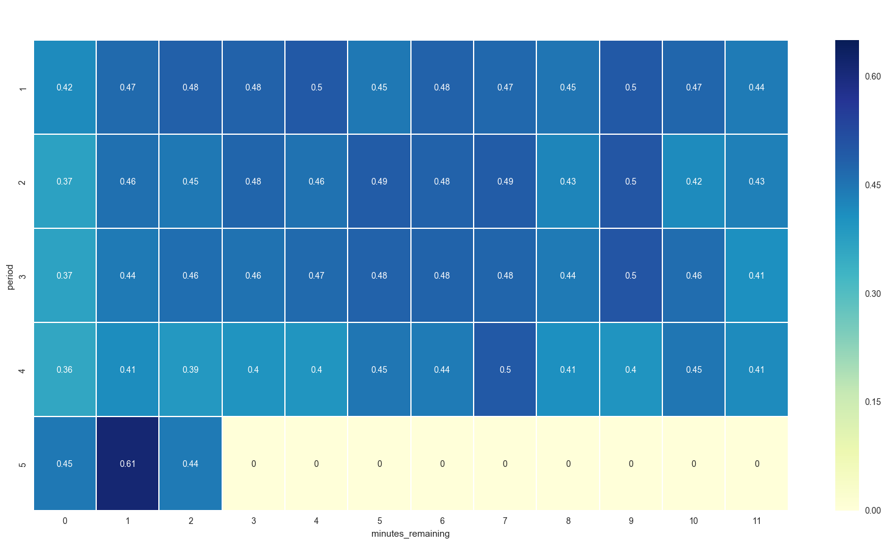
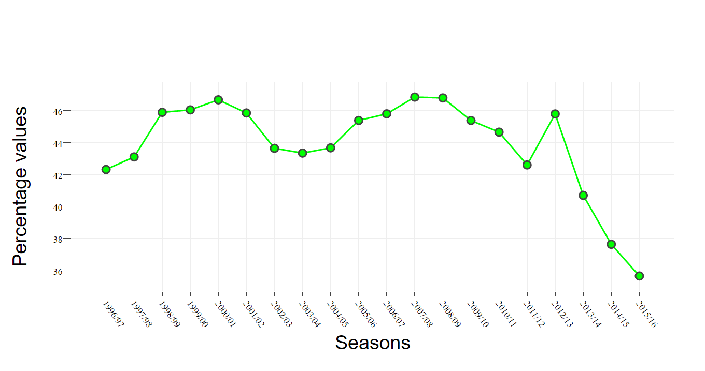
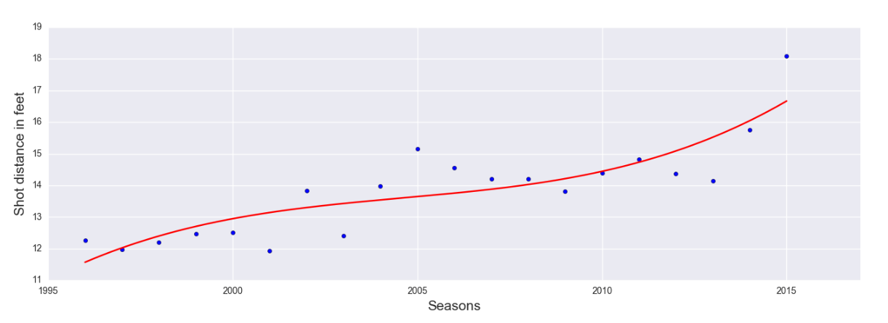

Kobe Bryant’s NBA career analysis
Team members: Vipul Munot Anirudh Murlidhar Siddharth Jayasankar
Introduction
Nowadays big data is being used in almost all the domains. Sports informatics and analytics is also venturing into big data to perform in-depth analysis in order to come up with better strategies and team composition. Through this project we would like to would wanted to explore how useful effective visualization of data regarding player’s performance could help develop better strategies and also help the player become better at the sport.
Abstract
The aim of this project is to analyze the career of basketball player Kobe Bryant by producing high quality visualizations. This project explores the use of innovative visualizations for the sport facilitating effective analysis of basketball players .
Research Questions
- Analysis of Kobe Bryant’s strong and weak zones.
- Performance analysis across seasons.
- Performance against various opponents.
- Develop a predictive model to predict if he converted or missed a shot.
Did Kobe perform better during clutch time? Kobe's average field goal rate is 0.447
Bryant's Accuracy Trend Analysis
Shots Attempted throughtout the game for his whole career.

Shot distance across all seasons
Predictive Model
- Classifier – XGBoost
- Model Parameters - max_depth=4, n_estimators=600, learning_rate=0.01
- Precision – 69%
- Recall - 68%
- Accuracy – 68.28%
Observations
- Kobe’s decline started in 2013-2014 Season.
- His accuracy decreases with distance from the basket.
- Kobe attempted more shots during the finishing stages of each period.
- With age he preferred to shoot from distance.
- Has best conversion rate during period 6 (extra time).
- Performed more dunks and layups in his early career.
- Kobe missed more shots than he converted.
- The predictive model (XG-Boost) has an accuracy of only around 68%, implying that Kobe was not very consistent with his shooting.
- The model predicted shots missed better than hits.